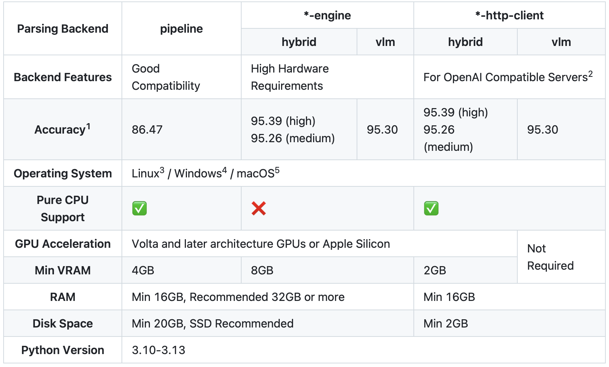
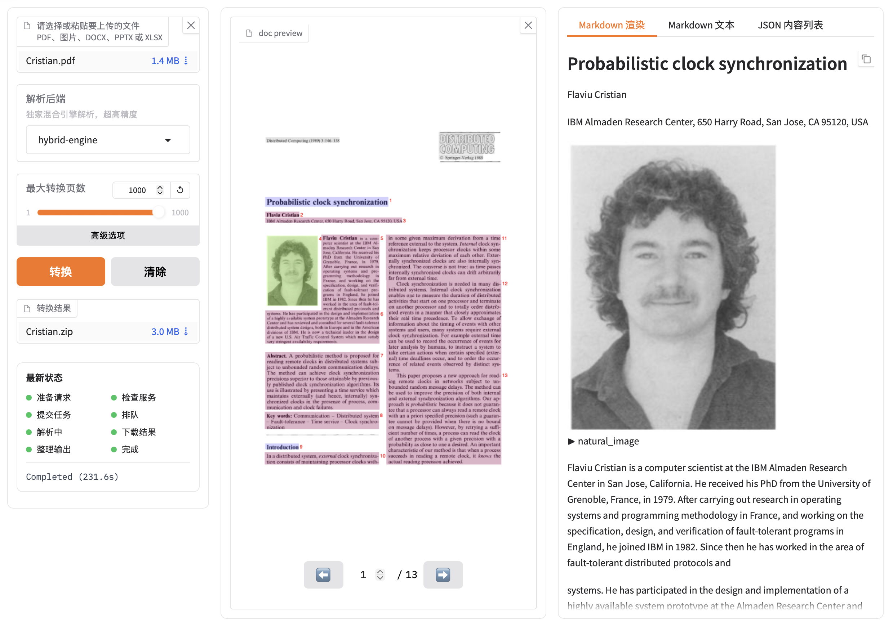

0. 背景
笔者日常使用 opencode 作为 Coding Agent，一些情况下，会有纯离线使用 Agent（调用本地部署的模型）读取并分析理解 PDF 的需求，但发现直接把 PDF 交给 Agent 时，opencode 返回错误：
1 | ERROR: Cannot read "Cristian.pdf" (this model does not support pdf input). |
为解决该报错，顺着 opencode 的源码，看看这条报错涉及的上下文发生了什么。
第一步是 read 工具读取文件，opencode 的内置 read 工具拿到文件后，并不是直接按文本读入，而是先读取文件头部的若干字节做 Magic 嗅探（每种文件格式的开头都有固定的字节序列，PDF 的开头固定是 %PDF- 五个字节，见参考 2，opencode v.18.18 源码 util/media.ts）：
1 | if (startsWith(bytes, [0x25, 0x50, 0x44, 0x46, 0x2d])) return "application/pdf" |
其中 0x25 0x50 0x44 0x46 0x2d 正是 %PDF- 五个字符的 ASCII 码。识别为 PDF 后，read 工具会将整个文件读入，封装为 base64 附件，准备随消息一起发给模型 （见参考 2，opencode v.18.18 源码 tool/read.ts）。
1 | if (isImage || isPdfAttachment(mime)) { |
第二步是 provider/transform.ts 中的 unsupportedParts() 会检查消息里的每个附件：先把附件的 mime 类型映射为模态（modality，如 application/pdf 对应 PDF 模态），再检查当前模型的 capabilities.input 是否声明支持该模态，模型能力信息来自 Models.dev （见参考 1）；不支持时，就把附件替换成一条文本形式的 ERROR （见参考 3，opencode v.18.18 源码 provider/transform.ts）
1 | function unsupportedParts(msgs: ModelMessage[], model: Provider.Model): ModelMessage[] { |
也就是说整个链路有两层：框架层 opencode 具备 PDF 的传输能力，但模型层，即笔者所使用的本地模型未声明 PDF 输入模态，附件在校验处被替换成了报错，报错发生在第二层。
换一个支持 PDF 输入的模型（比如云端模型 alibaba/qwen3.8-max）当然是最直接的解法，但是这个解法显然偏离了笔者的使用背景。于是问题转化为：如何在不依赖模型多模态能力的前提下，让 Agent 获得稳定的阅读 PDF 的能力？思路很清晰，就是在模型之外把 PDF 提前转成 Markdown，模型只需要读文本即可，但是笔者对 PDF 解析这个领域并不熟悉，故在本篇博客中，对从方案调研到具体实施的完整过程进行梳理、实践记录和剖析。
1. 方案调研与环境盘点
首先对 Agent 读 PDF 的主流做法做了调研，整理后大致可以分为几条路径：
| 路径 | 代表 | 原理 | 初步判断 |
|---|---|---|---|
| 模型原生输入 | Claude、GPT、Gemini | PDF 作为附件直接进模型 | 当前模型不支持，排除 |
| PDF 解析 skill/MCP server | 各类社区实现 | 通过 skill/MCP 挂载解析工具 （见参考 12） | 违背离线使用背景，排除 |
| 云端解析 API | LlamaParse、Mathpix | 上传文档，返回结构化结果 | 违背离线使用背景，排除 |
| 本地规则式提取 | pdftotext、PyMuPDF、pdfplumber | 按版面规则抽取文本流 | 候选，需实测 |
| 本地模型式解析 | MinerU、marker、docling | 用版面/OCR/视觉模型理解文档结构 | 候选，需实测 |
经过分析比较，两条本地路径中，规则式提取工具里笔者筛选出 pdftotext，其随附 pdftotext、pdfinfo 等命令行工具 （见参考 5），一条命令即可完成提取，不需要下载任何模型。模型式解析工具里笔者筛选出 MinerU 开源的文档解析工具，官方文档称可将 PDF/DOCX/PPTX/图片 转换为高保真 Markdown 或 JSON，支持公式转 LaTeX、表格结构还原、扫描件 OCR，并支持私有化完全离线部署 （见参考 6）。
综上，圈定 pdftotext 与 MinerU 两个候选。但两者各自的能力边界在哪里、分别适合什么类型的文档，仅看官方介绍无从判断，需要实际验证。
2. 先验证经典工具：pdftotext
pdftotext 来自 poppler 工具集 （见参考 5），安装只需一行：
1 | brew install poppler |
为了验证它的能力边界，笔者选取了两篇性质截然不同的真实文档做对照实验。
第一篇是 ST 官方应用笔记《an5067 - How to optimize STM32 MCUs internal RC oscillator accuracy》（14 页，单栏排版）：
1 | $ time pdftotext -layout docs/an5067.pdf - |
$0.031s$ 完成，阅读顺序完全正确，目录、章节编号、图表清单完整保留。-layout 选项保留了原文的空格布局，使得版式信息在纯文本中依然可读，对于单栏简单文档，pdftotext 近乎完美。
第二篇是 Cristian 的论文《Probabilistic clock synchronization》（13 页，双栏学术论文）：
1 | Flaviu Cristian is a com- in some given maximum derivation from a time |
同样是瞬间完成，但输出暴露了 pdftotext 的典型局限：它把页面当作纯文本流处理，左栏的作者简介与右栏的正文被交错拼接在一起，栏内换行产生的连字符全部残留（”com-puter”、”syn-chronization”），公式和图片则完全丢失，这样的文本交给模型阅读，会对理解有干扰。
这次对照实验回答了调研时留下的问题，pdftotext 的适用边界是单栏、纯文字，一旦遇到双栏排版、公式、表格就必须升级工具，而这类文档恰恰是笔者的高频场景（论文、期刊、数据手册）。进一步说，pdftotext 只能产出纯文本流，而交给模型阅读的材料需要区分分栏情况，保留标题层级、公式、表格、图片等结构信息，这些在论文和数据手册中恰恰承载着关键内容，所以仅仅使用规则式提取工具是不够的。
3. MinerU
3.1 理解 MinerU 的两种解析架构
MinerU 是一款文档解析工具，可将 PDF 、图像、 DOCX 、 PPTX 和 XLSX 格式的文档转换为 Markdown 和 JSON 等机器可读格式，以便进行后续的检索、提取和处理，最重要的是，它支持本地安装部署 （见参考 13）。
在动手安装部署之前，有必要先理解 MinerU 的架构设计。

* MinerU 解析后端
- pipeline 后端：由一组专用小模型组成的流水线，包含版面分析（PP-DocLayoutV2）→ 文字检测与识别（PP-OCRv6）→ 公式识别（unimernet/pp_formulanet）→ 表格识别（SlanetPlus），纯 CPU 即可运行
- VLM 后端：用一个端到端视觉语言大模型（MinerU2.5-Pro-2605，1.2B 参数）直接”阅读”页面图像并生成结构化 Markdown，精度更高
- hybrid 后端：两者的混合，pipeline 小模型做基础提取，VLM 对结果做增强纠错，精度最高
3.2 MinerU 下载规划
MinerU 官方推荐的安装方式是一条命令：
1 | uv pip install -U "mineru[all]" |
但官方文档说明 MinerU 的扩展模块可按需安装，”MinerU supports installing extension modules on demand based on different needs” （见参考 8）；对照 pyproject.toml 的 optional-dependencies （见参考 9），[all] 会装入全部扩展，其中包含 pipeline 及 VLM 本地推理相关的依赖（transformers、mlx-vlm 等）。
而笔者在本地部署的模型此时均通过 omlx 做统一管理，所以在这里笔者同样计划将 MinerU 涉及的 VLM 交给 omlx 下载并托管，所以安装范围收窄为 [pipeline] 即可。
1 | uv venv ~/venv/mineru --python 3.13 |
安装结果：mineru 3.4.5 + torch 2.13.0 + onnxruntime 等依赖，且其全部隔离在 ~/venv/mineru 中，不影响系统环境和其他工具。
3.3 MinerU 启动前
在此前的官方文档查阅中已经得知 （见参考 7）：MinerU 的 pip 包并不包含模型权重，首次运行时会自动从 HuggingFace/ModelScope 拉取，而如上一节所述，VLM 计划交给 omlx 托管，本地只需要 pipeline 部分，如果任由它自动下载，会不会把数 GB 的 VLM 权重也一并拉下来？
文档同时说明，权重也可以通过附带的 mineru-models-download 命令按需下载，支持交互式选择 pipeline、vlm 或全部，但没有写明交互模式的默认选项是什么，选错了既占磁盘又要重下。为确认这一点，笔者翻了一下下载脚本的源码 mineru/cli/models_download.py：
1 | model_type = click.prompt( |
交互模式的默认值是 all，直接回车确实会把完整的 VLM 权重一并下载。因此跳过交互，用非交互参数精确指定只下载 pipeline 的组件模型：
1 | ~/venv/mineru/bin/mineru-models-download -s huggingface -m pipeline |
下载完成后，模型路径被自动写入用户目录下的 ~/mineru.json 配置文件。至此，pipeline 侧的部署已经完成，但上面提到的 MinerU 涉及的 VLM 交给 omlx 托管 是怎么实现的、实际尝试后又遇到了什么，正是下一小节的内容。
3.4 桥接 omlx 的尝试
在翻阅官方文档的扩展模块章节时 （见参考 8），笔者注意到 MinerU 官方提供了 轻量客户端连接 OpenAI 兼容服务器 的用法，即 vlm-http-client 与 hybrid-http-client 两类后端：本地只跑 pipeline 小模型，VLM 部分通过 HTTP 发送给任意 OpenAI 兼容的推理服务器。而本机恰好运行着 omlx，笔者日常用它作为本地 LLM 的统一网关。
于是一个很自然的想法产生了：与其让 MinerU 自己加载 VLM，不如让 omlx 再托管一个 MinerU2.5 模型。笔者随即在 omlx 后台下载了社区转换的 MinerU2.5-Pro-2605-1.2B-mlx-fp16，并确认它已被 omlx 正确加载。
以 hybrid-http-client 后端首次尝试解析：
1 | MINERU_VL_MODEL_NAME=MinerU2.5-Pro-2605-1.2B-mlx-fp16 \ |
执行后立刻报错：
1 | mineru.cli.common.HybridDependencyError: `hybrid-http-client` requires local pipeline dependencies (`mineru[pipeline]`, including `torch`). Install `mineru[pipeline]` or `mineru[core]`. |
mineru[pipeline] 明明在 3.3 MinerU 涉及的 pipeline 下载 已经安装，所以直接读抛出该错误的源码（mineru/cli/common.py），发现它是一段 expect：
1 | def _load_hybrid_analyze_entrypoint(entrypoint_name: str, backend: str): |
也就是说，无论内部哪个模块 import 失败，对外都是同一句 请安装 mineru[pipeline]，直接在 venv 中手动 import 该模块，真实异常才暴露出来：
1 | ModuleNotFoundError: No module named 'six' |
根因是 pyproject.toml 漏声明了 six 这个依赖。使用 uv pip install --python ~/venv/mineru/bin/python six 补装后该问题解决。补上 six 后重试，这次 MinerU 与 omlx 成功建立了通信，omlx 后台显示大量请求开始涌入。但持续等待将近十分钟，也没有一条内容生成跑完，随后连接被中途切断：
1 | httpx.RemoteProtocolError: peer closed connection without sending complete message body (incomplete chunked read) |
连接为何被切断，客户端侧已经没有更多信息，转去查看 omlx 后台日志，找到了真实错误：
1 | omlx.exceptions.SchedulerQueueFullError: Scheduler waiting queue full: 32 >= 32 |
走读后发现，MinerU 侧（mineru_vl_utils/mineru_client.py）中，http-client 后端的默认并发 max_concurrency 被硬编码为 100，没有配置项；omlx 侧（omlx/scheduler.py）中，等待队列上限为 max_waiting = max(self.config.max_num_seqs * 4, 32)，而 max_num_seqs 映射自配置项 max_concurrent_requests，笔者为了让之前本地部署的模型能够在 48GB 内存资源中实现均衡运行，刻意将它设置为 8，于是等待队列上限为 max(8×4, 32) = 32。
两边的数字对上后，问题就清楚了：MinerU 的 http-client 模式一次解析会瞬间发出上百个并发请求，这是为 vLLM 这类专业高并发推理服务器设计的行为，请求洪峰直接把等待队列打爆，服务端在响应已开始的情况下抛出异常，最终表现就是后台看到的 peer closed connection。
为了验证流程，笔者将 omlx 并发临时调至 32（队列升至 128），流程确实跑通了。但为了这一个边缘需求的实现，变更了笔者已经在本机上测试均衡的 omlx 配置有些不划算。所以最终放弃了 omlx 管理，转向完全独立的原生部署。
3.5 转向原生部署
放弃桥接后，下一步自然是让 MinerU 的原生 mlx 引擎直接加载模型。本着不重复下载的原则，笔者先将 mineru.json 的 models-dir.vlm 指向了 omlx 已下载的那个 MLX 模型，以 hybrid-engine 后端试运行，但报错：
1 | Missing 391 parameters: |
报错指向这个社区转换只包含了语言模型部分，视觉塔整体缺失。结论很明确：MinerU 的模型，还是交给 MinerU 自己的下载工具最稳妥，从 HuggingFace 下载官方完整 VLM 权重：
1 | ~/venv/mineru/bin/mineru-models-download -s huggingface -m vlm |
这里有个小插曲：由于上一步把
models-dir.vlm指向了 omlx 的目录，下载工具检测到已配置本地模型路径后直接跳过了下载，将mineru.json中的该字段清空后重跑，才真正拉取了官方仓库。
下载完成后以原生 hybrid-engine 后端重新解析 Cristian.pdf：
1 | MINERU_MODEL_SOURCE=local ~/venv/mineru/bin/mineru \ |
1 | Layout Predict: 100%|██████████| 13/13 [00:01<00:00, 10.14it/s] |
13 页论文约 4 分钟解析完成，输出结构完整的 Markdown：标题层级正确，行内公式转为 $...$、展示公式转为 $$...$$，47 张图片全部提取并以相对路径正确引用。
为了量化 VLM 增强的价值，用纯 pipeline 后端（不启用 VLM）跑了同一篇论文做对照，两者的 diff 非常有说服力：
1 | - distributed evęnts ... their reàl time precedence # pipeline：OCR 噪声残留 |
pipeline 的输出整体可用，但存在 OCR 噪声和公式碎片；hybrid 模式下 VLM 对文本块逐一做了纠错和规范化，质量差异肉眼可见，这与官方给出的精度基准方向一致。
3.6 WebUI 试用
对齐官方安装形式 mineru[all] 后，扩展中包含了 gradio WebUI （见参考 9，gradio 在 optional-dependencies 中），一条命令即可启动本地网页界面：
1 | MINERU_MODEL_SOURCE=local ~/venv/mineru/bin/mineru-gradio |
WebUI 提供拖拽上传、后端选择（hybrid/pipeline）、解析强度（effort）调节等可视化操作，解析完成后可在线预览 Markdown 和版面标注图。

* MinerU WebUI
同一份 13 页的 Cristian.pdf，在 WebUI 中先后跑了三次，三次运行的时间记录如下：
1 | 运行1（hybrid,medium） 23:25:23 提交 → 23:27:59 完成，约 2分36秒 |
至此，三个工具的速度质量权衡都有了实测数据，之前悬而未决的 “怎么选” 终于有了答案，不是选一个，而是按文档类型分层调用：
| 层级 | 工具 | 实测耗时 | 适用场景 |
|---|---|---|---|
| 1 | pdftotext | 毫秒级 | 单栏简单文档 |
| 2 | MinerU pipeline | 数十秒 | 数字版复杂文档（双栏、表格） |
| 3 | MinerU hybrid | 分钟级 | 扫描件、质量兜底 |
4. 固化为 Agent 规则
工具链就绪后，最后一步是让 Agent 知道这套规则，所以将分层策略写入 opencode 的全局配置文件 ~/.config/opencode/AGENTS.md：
1 | ## Reading PDF files |
此后对 Agent 说分析一下这个 PDF，它会先判断文档类型，自动选择对应层级的工具，并把解析出的 Markdown 作为阅读对象。
1 | PDF 文档 |
日常维护固定为两条命令：
1 | # 升级 MinerU 本体（对齐官方推荐安装形式 mineru[all]） |
note：MinerU 3.4.5 未声明
six依赖（见 3.4 节），升级后若报ModuleNotFoundError: No module named 'six'，补装即可：uv pip install --python ~/venv/mineru/bin/python six。
参考
- MODELS.DEV - An open-source database of AI models
- opencode v.18.18 源码 - read.ts 与 util/media.ts
- opencode v.18.18 源码 - transform.ts
- opencode 官方文档 - MCP servers
- poppler 官网
- MinerU 官方文档 - Quick Start
- MinerU 官方文档 - Model Source
- MinerU 官方文档 - Extension Modules
- MinerU pyproject.toml
- MinerU 官方文档 - CLI Tools
- omlx github 开源仓库
- 一行命令，让你的 Code Agent 会读PDF
- MinerU github 开源仓库